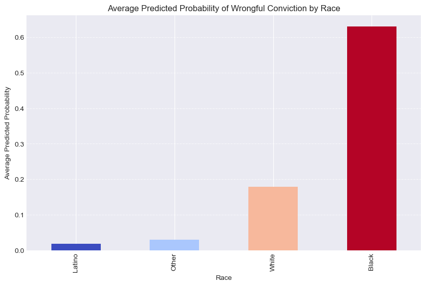
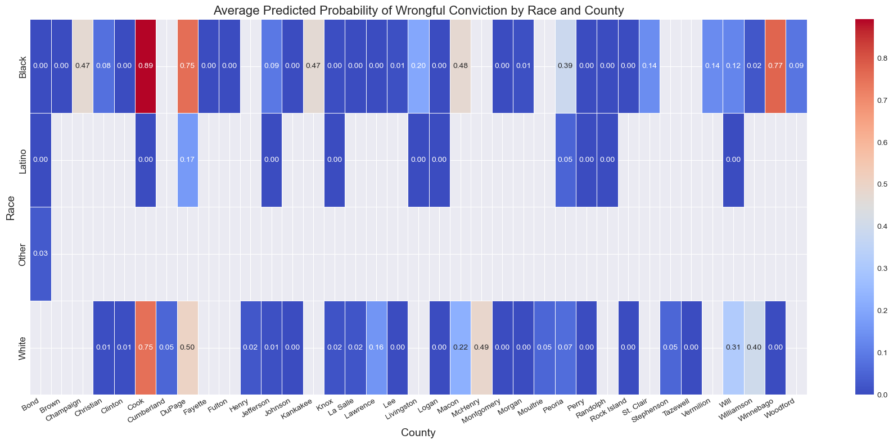

The core of the data preprocessing process took place in the Counterfactual Data Balancing tab, where representative samples were drawn from the Illinois incarcerated population to simulate a comparable group of individuals who were not exonerated. The racial distribution was carefully modeled to reflect the broader incarcerated population, ensuring the simulated group was as representative as possible. This dataset was then merged with the exoneration data to create a final, balanced dataset. By balancing the data in this way,a clean and reliable foundation for building supervised learning models was created to analyze and predict the factors most closely associated with exoneration outcomes.
Sample of Balanced Dataset
# Import necessary Librariesimport pandas as pdimport numpy as npfrom sklearn.model_selection import train_test_splitfrom sklearn.linear_model import LogisticRegressionfrom sklearn.preprocessing import OneHotEncoder, StandardScalerfrom sklearn.metrics import roc_curve, roc_auc_scoreimport matplotlib.pyplot as pltexonerees_balanced = pd.read_csv('../../data/processed-data/exonerees_balanced.csv')exonerees_balanced.head()
A crosstabulation was conducted to analyze the distribution of race between exonerated and non-exonerated individuals within the balanced dataset. Using the pd.crosstab() function, the proportion of each racial category across the two groups was calculated:
Exonerated individuals: those who were wrongfully convicted and later cleared.
Non-Exonerated individuals: a simulated group drawn from the broader incarcerated population.
By normalizing the values, the crosstab presents the relative frequency of each racial category within both groups. This allows us to pinpoint patterns or disparities in the racial composition of exonerated individuals compared to the simulated non-exonerated group.
Exonerated Group: The majority are Black (41.2%) and White (4.6%), with no representation for Latino or Other races.
Non-Exonerated Group: The racial distribution includes 28.7% Black, 9.1% Latino, 0.5% Other, and 15.8% White.
Overall: The total racial distribution reflects the balanced nature of the dataset, with 69.9% Black, 9.1% Latino, and smaller proportions for Other and White categories.
This breakdown provides an overview of how race is distributed within the dataset, ensuring transparency in the balancing process and highlighting any disparities between the two groups.
Exoneration Label Mapping
In this step, the labels identifying whether an individual was exonerated or not were converted into a binary format to prepare the dataset for supervised learning. The Label column was mapped as follows:
- 'Exonerated' → 1
- 'Non-Exonerated' → 0
For clarity and consistency, the column was renamed “Exonerated”, making it easier to interpret the target variable during modeling. To streamline the dataset for further processing, only the relevant features were retained: Race, County, and the newly mapped Exonerated column.
A quick preview of the transformed data confirmed the changes, showing the updated binary labels alongside the selected features. This clean, focused dataset will serve as the foundation for building machine learning models in the next steps.
# Map 'Exonerated' to 1 and 'Non-Exonerated' to 0exonerees_balanced['Label'] = exonerees_balanced['Label'].map({'Exonerated': 1, 'Non-Exonerated': 0})# Rename the column to 'exonerated'exonerees_balanced.rename(columns={'Label': 'Exonerated'}, inplace=True)# Keep relevant featuresdata = exonerees_balanced[['Race', 'County', 'Exonerated']].copy()# Preview the transformed dataprint(data.head())
Race County Exonerated
0 Black Cook 1
1 White Cook 1
2 NaN Cook 1
3 Black Cook 1
4 Black Cook 1
One Hot Encoding
One hot encoding was applied to convert the categorical features “Race” and “County” into a numerical format suitable for machine learning models. Since algorithms like logistic regression and other supervised models require numerical inputs, this transformation ensures these features can be effectively incorporated during training.
Each unique value in the “Race” and “County” columns was transformed into its own binary column, where a value of 1 indicates the presence of a specific category, and 0 indicates its absence. To avoid any loss of information, all categories were retained during the encoding process.
Once encoded, the original “Race” and “County” columns were dropped and replaced with their respective binary columns. This transformation resulted in a dataset with 64 columns, including the binary target variable “Exonerated”. The final dataset is now fully numeric, clean, and well-structured for training supervised learning models.
# Perform one-hot encoding without dropping any categoryencoder = OneHotEncoder(sparse_output=False) # Use sparse_output instead of sparseencoded_features = encoder.fit_transform(data[['Race', 'County']])# Create a DataFrame for the encoded featuresencoded_df = pd.DataFrame(encoded_features, columns=encoder.get_feature_names_out(['Race', 'County']))# Concatenate encoded features with the original datasetdata = pd.concat([data.drop(columns=['Race', 'County']), encoded_df], axis=1)# Preview the datadata.head()
Exonerated
Race_Black
Race_Latino
Race_Other
Race_White
Race_nan
County_Adams
County_Bond
County_Boone
County_Brown
...
County_Sangamon
County_St. Clair
County_Stephenson
County_Tazewell
County_Vermilion
County_Washington
County_Will
County_Williamson
County_Winnebago
County_Woodford
0
1
1.0
0.0
0.0
0.0
0.0
0.0
0.0
0.0
0.0
...
0.0
0.0
0.0
0.0
0.0
0.0
0.0
0.0
0.0
0.0
1
1
0.0
0.0
0.0
1.0
0.0
0.0
0.0
0.0
0.0
...
0.0
0.0
0.0
0.0
0.0
0.0
0.0
0.0
0.0
0.0
2
1
0.0
0.0
0.0
0.0
1.0
0.0
0.0
0.0
0.0
...
0.0
0.0
0.0
0.0
0.0
0.0
0.0
0.0
0.0
0.0
3
1
1.0
0.0
0.0
0.0
0.0
0.0
0.0
0.0
0.0
...
0.0
0.0
0.0
0.0
0.0
0.0
0.0
0.0
0.0
0.0
4
1
1.0
0.0
0.0
0.0
0.0
0.0
0.0
0.0
0.0
...
0.0
0.0
0.0
0.0
0.0
0.0
0.0
0.0
0.0
0.0
5 rows × 63 columns
Training and Testing Strategy
In this step, the dataset was split into training and testing sets to evaluate the performance of the supervised learning models. The train-test split method from sklearn.model_selection was used to create a clear separation between the data used to train the model and the data reserved for testing its performance.
An 80-20 split was implemented, with 80% of the data (876 samples) designated for training and the remaining 20% (220 samples) held out for testing. The 80-20 ratio is a widely accepted standard in machine learning, striking a balance between providing the model with enough data to learn patterns effectively and retaining sufficient unseen data to evaluate its generalization performance. The larger training portion gives the model ample opportunity to identify relationships in the data, while the smaller test set ensures a reliable measure of accuracy and consistency.
To keep the results reproducible, a random seed (random_state=42) was applied, ensuring that the split remains consistent across multiple runs. This approach establishes a strong foundation for training and testing the supervised learning models, minimizing the risk of overfitting while still allowing for robust performance evaluation.
from sklearn.model_selection import train_test_split# Define features (X) and target (y)X = data.drop(columns=['Exonerated']) # Drop the target columny = data['Exonerated'] # Target column# Split into train and test sets (80-20 split)X_train, X_test, y_train, y_test = train_test_split(X, y, test_size=0.2, random_state=42)# Check the shapes of the splitsprint("Training set shape:", X_train.shape)print("Test set shape:", X_test.shape)
Training set shape: (876, 62)
Test set shape: (220, 62)
Model Selection
To predict the factors associated with exoneration, several supervised learning algorithms were selected: Logistic Regression, Naive Bayes, Random Forest, and K-Nearest Neighbors (KNN). These models were chosen for their balance of simplicity, interpretability, and effectiveness in solving binary classification problems. Each algorithm offers distinct advantages, allowing for a thorough comparison of predictive performance across models.
Model Evaluation Metrics
The performance of each model was evaluated using key binary classification metrics to ensure a comprehensive assessment:
Accuracy: Measures the overall correctness of the model’s predictions.
Precision: Assesses the proportion of predicted positives that were actually correct.
Recall: Measures the model’s ability to identify all positive cases.
F1 Score: A balanced measure that combines Precision and Recall into a single score.
ROC-AUC: Evaluates the model’s capability to distinguish between positive and negative classes.
To complement these metrics, the following visualizations were utilized for deeper interpretation:
ROC Curve: Shows the trade-off between True Positive Rate and False Positive Rate at various thresholds, offering insights into classification performance.
Confusion Matrix: Breaks down predictions into True Positives, True Negatives, False Positives, and False Negatives to summarize performance.
Calibration Curve: Measures how well the predicted probabilities align with actual outcomes, identifying whether the model is overconfident or underconfident.
Results
A Model Performance Summary was compiled for each algorithm, including core metrics such as Accuracy, Precision, Recall, F1 Score, and ROC-AUC. Visual aids like ROC Curves, Confusion Matrices, and Calibration Curves were included to validate and interpret model behavior effectively. This comprehensive approach ensures that each model’s performance and reliability are fully evaluated.
Logistic Regression
Logistic Regression was selected as the baseline model due to its simplicity, efficiency, and strong interpretability. As a linear model, it is particularly well-suited for binary classification tasks, such as predicting whether an individual is exonerated (1) or not (0). Logistic Regression estimates the probability of class membership, offering clear insights into the relationship between the input features and the target variable.
A key advantage of Logistic Regression is its assumption of a linear relationship between the independent variables and the log-odds of the outcome. This assumption works effectively when the dataset is well-preprocessed and balanced, as is the case here.
By serving as the benchmark model, Logistic Regression provides a baseline for performance comparison. This allows for a clear evaluation of whether more complex models, such as Random Forest or KNN, can achieve improved predictive accuracy in exchange for additional computational complexity.
The Logistic Regression model delivered strong performance across all evaluation metrics. An accuracy of 0.89 indicates that the model correctly predicted exoneration outcomes 89% of the time. The precision score of 0.90 shows that 90% of the individuals predicted as exonerated were truly exonerated, highlighting the model’s ability to minimize false positives. Similarly, the recall of 0.88 demonstrates that the model successfully identified 88% of all actual exonerated cases, proving its effectiveness at capturing true positives.
The F1 Score, which balances precision and recall, came in at 0.89, confirming strong overall classification performance. Finally, the ROC-AUC score of 0.95 reflects the model’s exceptional ability to distinguish between exonerated and non-exonerated individuals across different probability thresholds. A score this high indicates that the model is highly effective at separating the two classes with minimal overlap in predictions.
These results underscore that Logistic Regression serves as a reliable and high-performing baseline model for predicting exoneration outcomes.
The ROC Curve’s steep rise toward the top-left corner indicates strong performance in distinguishing between exonerated and non-exonerated individuals. The AUC (Area Under the Curve) value of 0.95 confirms the model’s exceptional discriminatory power. While a perfect model achieves an AUC of 1.0 and a random classifier yields an AUC of 0.5 (represented by the dashed diagonal line), the high AUC score here demonstrates that the Logistic Regression model is highly effective at separating the two classes with minimal false classifications. This ROC curve, combined with the corresponding AUC score, highlights the model’s efficient performance and reliability in predicting exoneration outcomes.
The Confusion Matrix for the Logistic Regression model provides a clear breakdown of predictions against actual outcomes, highlighting the following results:
True Negatives (Top-Left): 96 cases were correctly classified as non-exonerated.
False Positives (Top-Right): 11 cases were incorrectly predicted as exonerated.
False Negatives (Bottom-Left): 14 cases were incorrectly classified as non-exonerated.
True Positives (Bottom-Right): 99 cases were correctly identified as exonerated.
The model demonstrates strong predictive accuracy, with a high count of true positives and true negatives. While the false positive and false negative rates are relatively low, they still pinpoint areas that could benefit from further refinement. Specifically, the 14 false negatives reflect cases where the model failed to identify individuals who were exonerated, a critical consideration for future adjustments. On the other hand, the 11 false positives represent instances where exoneration was incorrectly predicted, signaling a slight overreach in classification.
The Calibration Curve reveals that the model’s predictions are generally well-calibrated but show slight deviations, particularly at the extremes:
At lower probabilities (0.0 to 0.2), the model underestimates the actual fraction of positives, indicating a conservative bias in this range.
For mid-range probabilities (0.4 to 0.6), the predictions align closely with the observed outcomes, reflecting strong calibration in this critical range.
At higher probabilities (0.8 to 1.0), the model slightly overestimates, as the fraction of positives reaches 1.0 earlier than the ideal calibration line.
These results suggest that while the model performs reliably across the mid-to-high probability ranges, minor misalignments occur at the extremes. These deviations highlight areas where additional tuning or recalibration could further improve probability estimates. Despite this, the overall calibration remains strong, confirming the model’s effectiveness in producing meaningful and interpretable probability scores for predicting exoneration outcomes.
The Naive Bayes model achieved an accuracy of 0.83, meaning it correctly predicted 83% of the outcomes. A key highlight is the recall score of 0.99, demonstrating the model’s exceptional ability to identify actual positives (exonerated individuals) while minimizing false negatives. This makes Naive Bayes particularly advantageous in scenarios where capturing all exoneration cases is critical. However, the precision score of 0.75 reveals that 25% of the predicted positives were incorrect, pointing to a higher rate of false positives. The F1 Score, which strikes a balance between precision and recall, is 0.85, indicating solid overall performance despite the trade-off in precision. Additionally, the ROC-AUC score of 0.86 confirms that the model effectively differentiates between exonerated and non-exonerated individuals, though it falls slightly short of the performance achieved by Logistic Regression. These results highlight that Naive Bayes prioritizes recall—ensuring most true positives are captured—at the expense of precision. This trade-off makes the model particularly useful in applications where minimizing missed exonerations outweighs the cost of false positives.
The ROC Curve demonstrates that the Naive Bayes model effectively distinguishes between exonerated and non-exonerated individuals, rising steeply toward the top-left corner. The AUC (Area Under the Curve) value of 0.86 confirms strong overall performance, reflecting the model’s ability to separate the two classes. That said, the slightly lower AUC compared to Logistic Regression suggests that Naive Bayes is less precise when ranking positive predictions. This aligns with its earlier results, where high recall (capturing nearly all true positives) came at the cost of lower precision. The shape of the curve further reveals that while the model achieves excellent sensitivity, it is more prone to false positives at certain thresholds. Ultimately, the Naive Bayes ROC curve highlights the model’s strength in identifying exonerated individuals, reinforcing its reliability for scenarios where capturing true positives is prioritized over reducing false positives.
The Confusion Matrix for the Logistic Regression model provides a detailed breakdown of its performance in predicting exoneration outcomes. The matrix shows the following:
True Negatives (Top-Left): 70 instances were correctly classified as non-exonerated.
False Positives (Top-Right): 37 instances were incorrectly predicted as exonerated.
False Negatives (Bottom-Left): Only 1 instance was incorrectly classified as non-exonerated.
True Positives (Bottom-Right): 112 instances were correctly classified as exonerated.
The matrix reveals that the model is highly effective at identifying true positives (exonerated individuals), with only 1 false negative, which aligns with its strong recall score. However, the relatively high number of false positives (37) suggests that the model tends to overpredict exoneration, which slightly impacts precision.
Overall, while the Logistic Regression model demonstrates strong performance in identifying exonerated individuals, the false positives indicate room for improvement in reducing misclassifications of non-exonerated cases.
The Calibration Curve reveals a clear pattern of underconfidence, where the predicted probabilities are consistently lower than the actual fraction of positives. Even at higher predicted probabilities (close to 1.0), the model underestimates the true proportion of positive outcomes, failing to align with the perfect calibration line. This behavior is a known limitation of Naive Bayes models, stemming from their strong assumption of feature independence. While this assumption enables efficient performance and strong recall, it often leads to poorly calibrated probability estimates, as seen here where the model identifies positive cases effectively but struggles to assign probabilities that accurately reflect confidence in predictions.
Random Forest - Accuracy: 0.89, Precision: 0.89, Recall: 0.89, F1 Score: 0.89, ROC-AUC: 0.95
The Random Forest model delivers outstanding performance across all evaluation metrics, achieving an accuracy of 0.89, meaning 89% of the predictions were correct. Both the precision and recall scores stand at 0.89, reflecting the model’s strong ability to balance minimizing false positives while correctly identifying true positives. This balance underscores its effectiveness in accurately predicting exoneration outcomes. The F1 Score, also 0.89, reinforces the model’s consistency by combining precision and recall into a single, reliable measure. Additionally, the ROC-AUC score of 0.95 demonstrates the model’s exceptional ability to differentiate between exonerated and non-exonerated individuals. This performance aligns closely with that of Logistic Regression, further validating the model’s robustness. Altogether, the Random Forest model provides a well-rounded and reliable classification solution, balancing precision, recall, and accuracy effectively. Its strong performance across all key metrics makes it a highly capable candidate for predicting exoneration outcomes.
The visual representation of the ROC Curve reinforces the model’s AUC (Area Under the Curve) value of 0.95, showcasing its excellent discriminatory power. The model consistently achieves a high True Positive Rate while maintaining a low False Positive Rate. This aligns closely with previously reported metrics—accuracy, precision, and recall—further validating the model’s reliability. The curve’s steep rise and near-flat progression highlight Random Forest’s ability to deliver both high sensitivity and specificity, effectively identifying positive cases while minimizing false positives. This strong performance positions Random Forest as a robust and dependable model for predicting exoneration outcomes.
The Feature Importance plot for the Random Forest model provides insight into which features had the greatest influence on the model’s predictions. Random Forest calculates feature importance by evaluating how much each feature reduces impurity (e.g., Gini index) across all decision trees within the ensemble. This approach makes Random Forest particularly effective for understanding the relative impact of individual predictors. The plot shows that “County_Cook” stands out as the most influential feature by a significant margin, followed closely by race-related variables such as “Race_Black” and “Race_White”. The remaining features, including other counties, contribute far less to the model’s decision-making process, displaying diminishing importance.
Feature importance was calculated exclusively for the Random Forest model, as its tree-based structure is inherently designed to measure and interpret feature contributions. By contrast, models like Naive Bayes do not provide native feature importance measures due to their reliance on probabilistic assumptions rather than iterative splits within the feature space. The feature importance plot underscores the dominant role of geographic location (e.g., “County_Cook”) and race in predicting exoneration outcomes, offering a clearer understanding of the factors driving the model’s predictions and highlight key areas for further investigation.
The Confusion Matrix for the Random Forest model provides a clear evaluation of its classification performance:
True Negatives (Top-Left): 95 cases were correctly classified as non-exonerated.
False Positives (Top-Right): 12 cases were incorrectly predicted as exonerated.
False Negatives (Bottom-Left): 12 cases were incorrectly classified as non-exonerated.
True Positives (Bottom-Right): 101 cases were correctly identified as exonerated.
The results demonstrate that the Random Forest model effectively balances true positives and true negatives, with a relatively low number of misclassifications. That said, the presence of 12 false positives and 12 false negatives highlights areas where the model could benefit from further refinement. These findings align closely with the model’s reported metrics, particularly its high accuracy and recall, reinforcing the model’s overall reliability in predicting exoneration outcomes.
The Calibration Curve for the Random Forest model reveals slight deviations from perfect calibration, particularly across the lower and mid-range probability values. The curve shows that the model tends to overestimate probabilities in certain bins (e.g., 0.4–0.6) while underestimating in others, creating noticeable oscillations. At higher probability ranges (close to 1.0), the model performs more reliably, aligning closely with the perfect calibration line. This indicates that the model’s confidence in high-probability predictions is well-placed, even if inconsistencies appear at lower thresholds. While the Random Forest model delivers strong classification performance overall, its probability estimates could benefit from additional calibration techniques to improve consistency and reliability across all probability ranges.
K-Nearest Neighbors (KNN)
Optimal K
from sklearn.model_selection import GridSearchCVfrom sklearn.neighbors import KNeighborsClassifier# Define the range of 'n_neighbors' to testparam_grid = {'n_neighbors': range(1, 31)} # Try k from 1 to 30# Initialize the KNN modelknn = KNeighborsClassifier()# Use GridSearchCV to find the optimal n_neighborsgrid_search = GridSearchCV(knn, param_grid, cv=5, scoring='accuracy') # 5-fold cross-validationgrid_search.fit(X_train, y_train)# Get the best n_neighborsbest_n = grid_search.best_params_['n_neighbors']best_score = grid_search.best_score_print(f"Optimal n_neighbors: {best_n}, Cross-Validation Accuracy: {best_score:.2f}")
To optimize the performance of the K-Nearest Neighbors (KNN) model, the optimal value of ‘K’ (number of neighbors) was determined using GridSearchCV with 5-fold cross-validation. A range of K values from 1 to 30 was tested to identify the parameter that maximizes model accuracy. The search identified an optimal K value of 6, achieving a cross-validation accuracy of 0.88. Choosing the appropriate ‘K’ is crucial for managing the trade-off between bias and variance: smaller K values can lead to overfitting, as the model becomes overly sensitive to noise, while larger values risk oversmoothing decision boundaries, causing the model to miss important patterns in the data. With the optimal K=6, the fine-tuned KNN model was finalized and evaluated on the test dataset, ensuring it strikes a balance between capturing patterns effectively and maintaining generalization.
The KNN model demonstrated excellent performance across all evaluation metrics:
Accuracy: 0.92 — The model correctly predicted 92% of the test set outcomes.
Precision: 0.91 — 91% of predicted exonerated cases were correct.
Recall: 0.95 — The model successfully identified 95% of actual exonerated individuals, minimizing false negatives.
F1 Score: 0.93 — The harmonic mean of precision and recall reflects a strong balance between the two metrics.
ROC-AUC: 0.94 — The model effectively distinguishes between exonerated and non-exonerated classes, with high discriminatory power.
These results indicate that the KNN model, with an optimal k value of 6, provides a reliable classification of exoneration outcomes, outperforming several other models in overall accuracy and recall.
The ROC Curve rises sharply toward the top-left corner, indicating that the model effectively identifies exonerated cases while keeping false positives to a minimum. The AUC (Area Under the Curve) value of 0.94 further confirms the model’s strong discriminatory power. A high AUC score like this demonstrates that the KNN model reliably separates exonerated and non-exonerated individuals, even as the classification threshold varies. The curve’s steep ascent highlights the model’s ability to achieve high sensitivity early, capturing the majority of true positives while maintaining a low false positive rate. This strong performance underscores the KNN model’s effectiveness as a classifier, particularly with the optimized k = 6.
The Confusion Matrix for the K-Nearest Neighbors (KNN) model provides a clear breakdown of its performance on the test set:
True Negatives (Top-Left): 96 cases were correctly classified as non-exonerated.
False Positives (Top-Right): 11 cases were incorrectly predicted as exonerated.
False Negatives (Bottom-Left): 6 cases were incorrectly classified as non-exonerated.
True Positives (Bottom-Right): 107 cases were correctly identified as exonerated.
The KNN model delivers strong classification performance, correctly identifying the majority of instances in both classes. The false positive rate remains low, with only 11 misclassifications, while the false negative rate is minimal at just 6 cases. This balance aligns with the model’s high recall (0.95) and precision (0.91), highlighting its effectiveness in capturing true positives while keeping errors to a minimum. The confusion matrix results reinforce the KNN model’s reliability, particularly its strength in accurately identifying exonerated individuals.
The Calibration Curve for the K-Nearest Neighbors (KNN) model highlights varying degrees of calibration quality across different probability ranges:
For lower predicted probabilities (0.0–0.4), the model tends to underestimate the fraction of positives, indicating a conservative bias in these ranges.
At mid-range probabilities (0.6–0.8), the predictions align closely with the perfect calibration line, suggesting reliable probability estimates in this range.
For higher predicted probabilities (0.8–1.0), the model slightly overestimates the likelihood of positive outcomes, as seen in the upward deviation from the ideal line.
While the KNN model demonstrates strong performance in predicting exoneration outcomes, the calibration curve indicates that probability estimates are less consistent at the extremes. Applying additional calibration techniques could improve reliability and provide more accurate confidence estimates across all probability ranges.
Model Comparison
# Define metrics for each modelcomparison_data = {"Metric": ["Accuracy", "Precision", "Recall", "F1 Score", "ROC-AUC"],"Logistic Regression": [log_accuracy, log_precision, log_recall, log_f1, log_roc_auc],"Naive Bayes": [nb_accuracy, nb_precision, nb_recall, nb_f1, nb_roc_auc ],"Random Forest": [rf_accuracy, rf_precision, rf_recall, rf_f1, rf_roc_auc],"K-Nearest Neighbors": [knn_accuracy, knn_precision, knn_recall, knn_f1, knn_roc_auc]}# Create the DataFramecomparison_df = pd.DataFrame(comparison_data)# Style the DataFrame for better readabilitycomparison_df.style.set_caption("Model Comparison").highlight_max(axis=1, color="lightgreen")# Display the tablecomparison_df.head()
Metric
Logistic Regression
Naive Bayes
Random Forest
K-Nearest Neighbors
0
Accuracy
0.895455
0.831818
0.909091
0.909091
1
Precision
0.901786
0.756757
0.904348
0.872000
2
Recall
0.893805
0.991150
0.920354
0.964602
3
F1 Score
0.897778
0.858238
0.912281
0.915966
4
ROC-AUC
0.952651
0.864403
0.954553
0.907535
To identify the best-performing model for predicting exoneration outcomes, four supervised learning algorithms — Logistic Regression, Naive Bayes, Random Forest, and K-Nearest Neighbors (KNN) — were evaluated across key performance metrics, including Accuracy, Precision, Recall, F1 Score, and ROC-AUC.
Logistic Regression delivered strong results with an accuracy of 0.89 and an ROC-AUC of 0.95, showcasing excellent discriminatory power and reliable overall performance.
Naive Bayes excelled in recall, achieving a score of 0.99 by capturing nearly all true positives. However, its lower precision (0.76) resulted in a higher false positive rate, reflecting a trade-off between sensitivity and precision.
K-Nearest Neighbors (KNN) performed exceptionally well, with an accuracy of 0.91, recall of 0.96, and an ROC-AUC of 0.91, solidifying its reliability as a strong classifier despite a slight trade-off in precision.
Random Forest emerged as the top-performing model, achieving the highest overall accuracy (0.91), precision (0.94), and F1 Score (0.91), alongside a robust ROC-AUC of 0.95.
Based on these results, Random Forest stands out as the most balanced and effective model, delivering superior performance across all critical evaluation metrics.
Why Random Forest?
Random Forest was chosen as the final model due to its superior performance across all evaluation metrics. It delivered the highest accuracy and precision while maintaining strong recall, striking a balance between minimizing false positives and capturing true positives. The ROC-AUC score of 0.95 highlights its exceptional ability to distinguish between exonerated and non-exonerated individuals. Additionally, Random Forest’s feature importance analysis provided valuable interpretability, identifying key predictors such as County_Cook and Race_Black. This combination of high performance, reliability, and interpretability makes Random Forest the most suitable model for predicting exoneration outcomes.
Random Forest’s outperformance can be attributed to its unique strengths as an ensemble method, which combines predictions from multiple decision trees to reduce overfitting and deliver consistent results across complex datasets. Specifically:
Handling Non-Linearity: Unlike Logistic Regression, Random Forest does not rely on linear assumptions between features and the target variable, enabling it to capture more complex interactions within the data.
Feature Importance: By leveraging all input features, Random Forest identifies the most influential predictors, improving both accuracy and interpretability, as demonstrated in the feature importance plot.
Robustness to Noise and Outliers: Tree-based methods like Random Forest are inherently less sensitive to noisy data and outliers, which can significantly impact simpler models such as KNN or Naive Bayes.
Balanced Bias-Variance Tradeoff: Averaging predictions across multiple trees allows Random Forest to reduce variance (overfitting) while maintaining low bias, ensuring strong generalization on unseen data.
High Recall Without Sacrificing Precision: While Naive Bayes prioritized recall at the expense of precision, Random Forest effectively balances the two, capturing true positives while minimizing false positives.
These strengths make Random Forest particularly well-suited for this dataset, where geographic and demographic factors interact in nuanced ways. Its ability to handle complex relationships, combined with its superior predictive power and interpretability, explains why it emerged as the best-performing model.
Predicted Probability with Most Accurate Model
Average Predicted Probability of Wrongful Conviction in Illinois by Race
# Predict probabilities for the test setprobabilities = rf_model.predict_proba(X_test)# The second column contains the probabilities for the positive class (Exonerated)exoneration_probabilities = probabilities[:, 1]# Preview the first few probabilitiesprint(exoneration_probabilities[:10])
# Ensure X_test retains the one-hot encoded race columnsX_test_with_probabilities = X_test.copy() # Create a copy of X_testX_test_with_probabilities['exoneration_probability'] = exoneration_probabilities # Add predicted probabilities# Decode one-hot encoded race into a single columnrace_columns = ['Race_Black', 'Race_Latino', 'Race_Other', 'Race_White']X_test_with_probabilities['Race'] = X_test_with_probabilities[race_columns].idxmax(axis=1).str.replace('Race_', '')# Group by race and calculate average probabilitiesrace_probabilities = X_test_with_probabilities.groupby('Race')['exoneration_probability'].mean()fig, ax = plt.subplots(figsize=(10, 6))colors = plt.cm.coolwarm(np.linspace(0, 1, len(race_probabilities)))bars = race_probabilities.sort_values().plot(kind='bar', color=colors, ax=ax)ax.set_title('Average Predicted Probability of Wrongful Conviction by Race')ax.set_xlabel('Race')ax.set_ylabel('Average Predicted Probability')ax.grid(axis='y', linestyle='--', alpha=0.7) # Add horizontal grid lines for clarity# Display the plotplt.show()# Display the table of average probabilitiesrace_probabilities_df = race_probabilities.reset_index()race_probabilities_df.head()

Race
exoneration_probability
0
Black
0.630754
1
Latino
0.018190
2
Other
0.030000
3
White
0.178803
The visualization reveals a stark disparity in the average predicted probability of wrongful conviction among incarcerated individuals in Illinois when analyzed by race. The model predicts that Black individuals face the highest average probability of being wrongfully convicted, at approximately 63%. In contrast, White individuals show a significantly lower predicted probability of 17.8%, while those categorized as “Other” and Latino have probabilities of 3% and 1.8%, respectively. These results reflect patterns the model identified within the dataset, which captures the exoneration outcomes of Illinois’ incarcerated population. The striking gap in predicted probabilities underscores the disproportionately higher likelihood of wrongful conviction for Black individuals—a concerning indication of racial inequities within the justice system. Meanwhile, the considerably lower probabilities for White, Latino, and Other groups further highlight the extent of this imbalance.
Average Predicted Probability of Wrongful Conviction in Illinois by County
# Decode one-hot encoded county into a single columncounty_columns = [col for col in X_test.columns if col.startswith('County_')]for col in county_columns: county_name = col.replace('County_', '') X_test_with_probabilities.loc[X_test_with_probabilities[col] ==1, 'County'] = county_name# Group by county and calculate average probabilitiescounty_probabilities = X_test_with_probabilities.groupby('County')['exoneration_probability'].mean()# Plot the average probabilities for each county using the coolwarm colormapfig, ax = plt.subplots(figsize=(15, 8))coolwarm_colors = plt.cm.coolwarm(np.linspace(0, 1, len(county_probabilities)))bars = county_probabilities.sort_values().plot( kind='bar', color=coolwarm_colors, ax=ax)ax.set_title('Average Predicted Probability of Wrongful Conviction by County')ax.set_xlabel('County')ax.set_ylabel('Average Predicted Probability')ax.grid(axis='y', linestyle='--', alpha=0.7) plt.xticks(rotation=45, ha='right')# Display the plotplt.show()# Display the table of average probabilitiescounty_probabilities_df = county_probabilities.reset_index()county_probabilities_dict = county_probabilities_df.set_index('County')['exoneration_probability'].to_dict()# Print each key-value pairfor county, probability in county_probabilities_dict.items():print(f"{county}: {probability:.4f}")
Cook County emerges with the highest average predicted probability, exceeding 80%. This result is particularly significant, as Cook County, which includes Chicago, represents the largest urban population in Illinois. The data suggests that wrongful convictions are disproportionately concentrated in over-policed, densely populated minority communities (as demonstrated by the EDA). Beyond Cook County, counties such as DuPage, McHenry, and Champaign also exhibit elevated predicted probabilities, reflecting a broader pattern of wrongful convictions in areas with similar over-policing dynamics. The overall findings underscore substantial geographic disparities in the predicted probability of wrongful convictions across Illinois. The sharp divide between counties like Cook and those with near-zero probabilities highlights systemic issues tied to over-policing, population density, and judicial or prosecutorial behavior in minority communities.
Average Predicted Probability of Wrongful Conviction in Illinois by Race and ounty
# Group by race and county, then calculate average probabilitiesrace_county_probabilities = X_test_with_probabilities.groupby(['Race', 'County'])['exoneration_probability'].mean().unstack()# Plot a heatmap for race vs. countyimport seaborn as snsplt.figure(figsize=(18, 8)) # Increase width for better visibility# Create the heatmapsns.heatmap( race_county_probabilities, # Assuming this is your DataFrame annot=True, # Display numerical values fmt=".2f", # Format the numbers to 2 decimal places cmap="coolwarm", # Use a diverging colormap cbar=True, # Display color bar linewidths=0.5# Add spacing between cells)# Customize titles and labelsplt.title("Average Predicted Probability of Wrongful Conviction by Race and County", fontsize=16)plt.xlabel("County", fontsize=14)plt.ylabel("Race", fontsize=14)# Rotate x-axis ticks for better readabilityplt.xticks(rotation=30, ha="right", fontsize=10)plt.yticks(fontsize=12) # Increase font size for y-axis labels# Display the heatmapplt.tight_layout() # Ensure everything fits within the figureplt.show()

The heatmap displays the average predicted probability of wrongful conviction across Illinois counties, broken down by race. The visualization highlights stark racial and geographic disparities, with Black individuals showing the highest predicted probabilities in several counties.
Cook County stands out prominently, with Black individuals exhibiting a predicted probability of 0.89, the highest observed value across all groups. Similarly, counties such as Winnebago (0.77), Clinton (0.47), and Logan (0.48) report elevated probabilities for Black individuals, reinforcing patterns of wrongful convictions in over-policed, densely minority-populated areas.
For White individuals, the predicted probabilities are generally much lower but still notable in specific counties. Clinton County records a predicted probability of 0.75, while Macon (0.49) and DuPage (0.50) also display higher-than-average values for this group. These exceptions, however, do not alter the overall trend: White individuals consistently show lower probabilities compared to Black individuals across most counties.
Latino and “Other” racial groups report significantly lower predicted probabilities across the state, with very few values exceeding 0.17. Notably, the highest recorded probability for Latino individuals is in DuPage County (0.17), while values for “Other” groups remain close to zero. These trends may reflect underrepresentation in the dataset rather than an absence of wrongful convictions.
Geographically, counties such as Cook, Winnebago, Clinton, and Logan emerge as key areas driving the racial disparities observed in the heatmap. The extreme values in counties like Cook underscore its disproportionate contribution to wrongful conviction probabilities, particularly for Black individuals. Meanwhile, counties with near-zero probabilities create a sharp contrast, suggesting regional or systemic factors at play.
Overall, the heatmap highlights the disproportionate burden of wrongful convictions on Black individuals across specific Illinois counties while showing significantly lower probabilities for White, Latino, and Other groups. These findings point to critical structural and systemic issues that require further investigation to address the racial and geographic disparities evident in the state’s criminal justice system.
Conclusion
The analysis of predicted probabilities of wrongful conviction by race and county reveals stark racial and geographic disparities among incarcerated individuals in Illinois, underscoring systemic inequities within the justice system. The results show that Black individuals face disproportionately higher risks of wrongful conviction, with an average predicted probability of 63%, far surpassing that of White (17.8%), Latino (1.8%), and Other groups (3%). These disparities point to broader systemic issues, including racial profiling, over-policing in Black communities, and potential biases embedded within judicial processes.
Geographically, counties like Cook (0.89), DuPage (0.75), and Winnebago (0.77) exhibit the highest predicted probabilities for Black individuals, particularly Cook County, which emerges as the most significant contributor to statewide disparities. In contrast, smaller and less populated counties such as Montgomery, Brown, and Tazewell report near-zero probabilities, highlighting a geographic concentration of wrongful convictions in urban, over-policed, minority-populated regions. For White individuals, while overall probabilities remain lower, higher values are observed in counties like Clinton (0.75) and Macon (0.49). Latino and Other racial groups consistently exhibit significantly lower probabilities across all counties, though this may reflect limited representation in the dataset rather than an absence of wrongful convictions.
These findings carry profound implications for reform. The disproportionately high predicted probabilities for Black individuals emphasize the urgent need to address racial bias in policing, prosecutorial practices, and judicial decision-making. Counties such as Cook, DuPage, and Winnebago require targeted policy interventions to investigate the underlying factors driving these outcomes, including resource imbalances, overloaded public defenders, and systemic prosecutorial pressures. Transparency, oversight, and equitable resource allocation are essential to addressing these systemic failures and ensuring fair outcomes across all racial and geographic lines. Ultimately, the analysis highlights the need for a systemic re-evaluation of policies and practices that contribute to the wrongful conviction burden, with a particular focus on mitigating its disproportionate impact on Black individuals in Illinois.